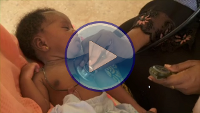

Postnatal care (PNC) is the care given to the mother and her newborn baby immediately after the birth and for the first six weeks of life (Figure 1.1). This period marks the establishment of a new phase of family life for women and their partners and the beginning of the lifelong health record for newborn babies (or neonates - a term often used by doctors, nurses and midwives).

Although for most women and babies, the postnatal period is uncomplicated, effective postnatal care (PNC) is also about recognising any deviation from expected recovery after birth, and evaluating and intervening appropriately in a timely fashion. It is of major concern that less than 6% of women in Ethiopia give birth in health facilities and not more than 10% receive any postnatal care within two days of delivery. Your role as a Health Extension Practitioner is therefore vitally important in improving this situation, identifying danger signs and reducing the adverse outcomes for mothers and newborns.
In Ethiopia, as in all countries, the postnatal period is often marked by specific cultural practices. Understanding the beliefs and cultural practices in your community is fundamental in ensuring appropriate postnatal care. In this first study session, you will learn why care in the postnatal period is so important, and about the need for community participation and involvement for optimum PNC. We briefly summarise some methods of community mobilisation, and how to establish partnerships with the key gatekeepers who can help you look after new mothers and their babies.